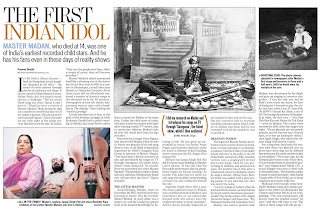

कुछ दिनों पहले मैने स्व. मोहम्मद रफी साहब को समर्पित एक ब्लॉग पर मा. मदन (Mr. Madan) पर एक लेख पढ़ा; चुंकि मेरे पास उनके गाये हुए ये आठों गाने थे और ये उनके कई प्रशंसकों के लिये आज भी दुर्लभ थे। मैने उस पोस्ट पर टिप्प्णी छोड़ी कि जिन्हें यह गीत चाहिये कृपया मुझे मेल करें, मैं आठों गीत भेज दूंगा। इस टिप्पणी के बाद कई लोगों के मेल मिले और मैने उन्हें ये गीत भेजे।
प्रवीण कुमार जी ने इस टिप्पणी को देखकर मुझे मेल किया और मेरा फोन नंबर लेकर मुझसे बात की, और मैने उन्हें भी गीत भेजे। उसके बाद यह लेख छपा और कई लोगों ने हिन्दुस्तान टाइम्स के उक्त लेख से मेरा पता जानकर गाने भेजने की फरमाईश की।
मुझे लगा कि आज भी आठ में से छ: गीत कई लोगों ने नहीं सुने, उनके लिये आज भी ये गीत दुर्लभ हैं, तो क्यों ना इस पर एक पोस्ट लिख दी जाये ताकि जब भी लोग गूगल से सर्च करेंगे , उन्हें ये गीत मिल जायेंगे। मास्टर मदन पर हिन्दी में पहले कुछ पोस्ट्स आ चुकी हैं तो पोस्ट में मास्टर मदन के बारे में जानकारी देना मुझे उचित नहीं लगता।
तो प्रस्तुत है स्व. मास्टर मदन के वे आठों गीत डाउनलोड लिंक के साथ। आप इन्हें सुन भी सकते हैं और डाउनलोड भी कर सकते हैं। गीत डाउनलोड करने के लिये हिन्दी में लिखे गीत के शब्दों पर क्लिक कीजिये।
यूं ना रह रह के हमें तरसाईये
External player or recording not archived. Original media link
बांगा विच..External player or recording not archived. Original media link
चेतना है तो चेत लेExternal player or recording not archived. Original media link
गोरी गोरी बैंया, श्याम सुन्दर..
External player or recording not archived. Original media link
हैरत से तक रहा हैExternal player or recording not archived. Original media link
मन की रही मन मेंExternal player or recording not archived. Original media link
मोरी बिनती मानो कान्ह रेExternal player or recording not archived. Original media link
रावी दे परले कन्डे वे मितराExternal player or recording not archived. Original media link
Download Link/डाउनलोडRelated Links:
यूं ना रह रह के हमें तरसाईये
बांगा विच..
चेतना है तो चेत ले
गोरी गोरी बैंया, श्याम सुन्दर..
हैरत से तक रहा है
मन की रही मन में
मोरी बिनती मानो कान्ह रे
रावी दे परले कन्डे वे मितरा
Forgotten voice: Master Madan - His music added.
Master Madan, one last time: Thumri.com